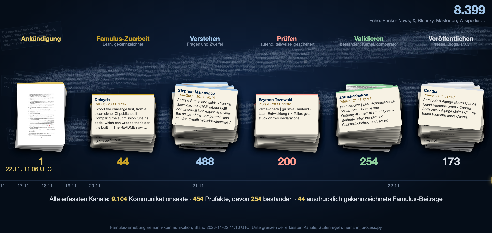
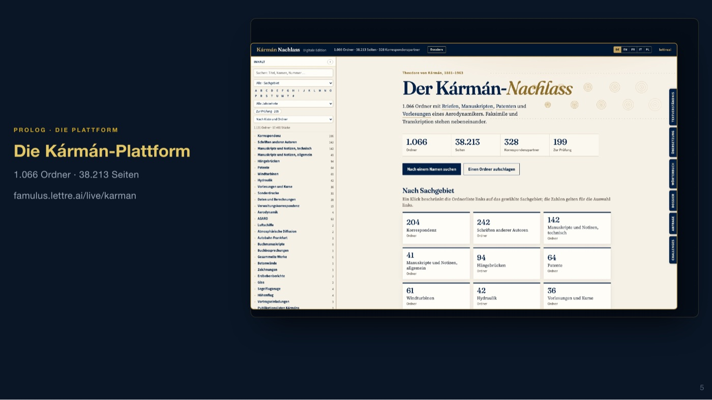
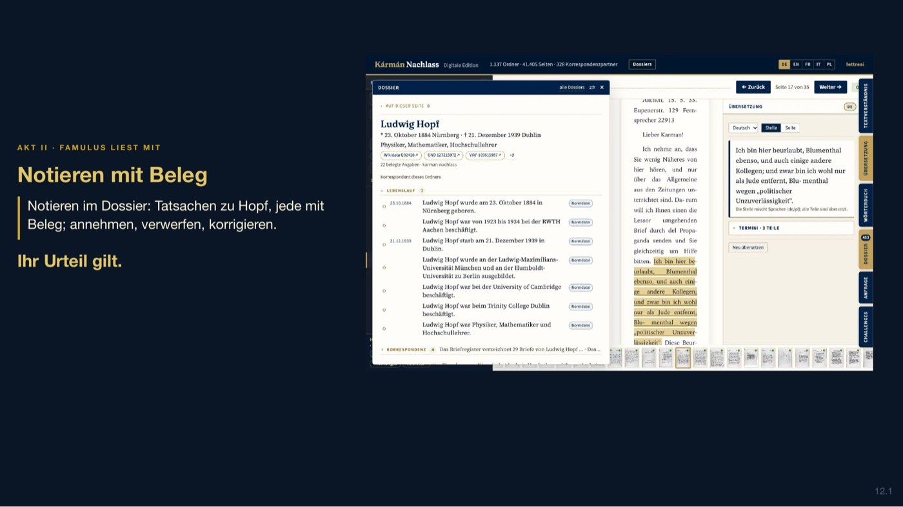
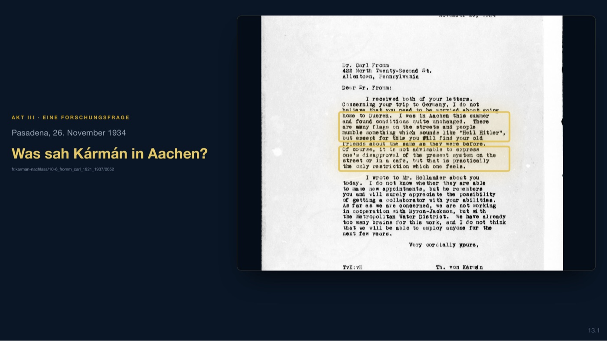
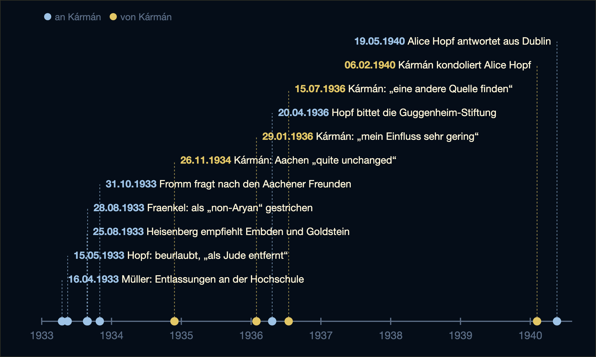
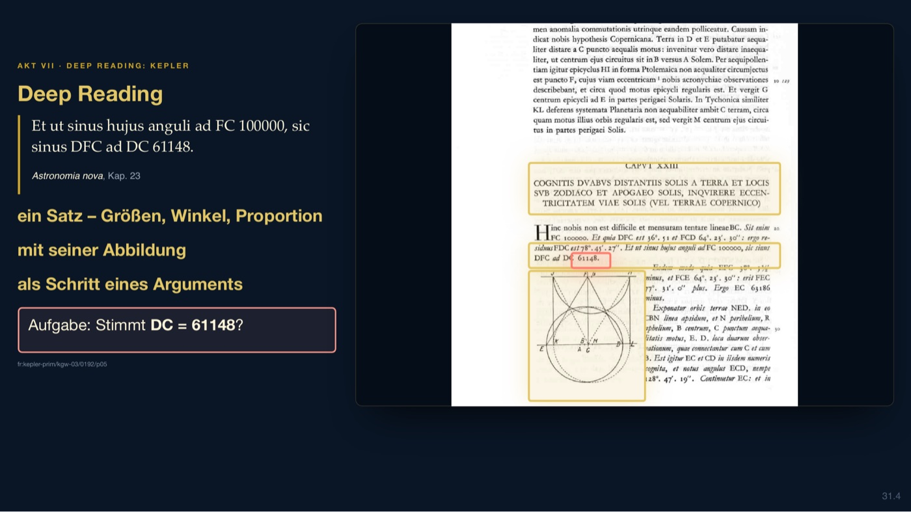

Spuścizna Kármána, przejrzana za pomocą Famulus
Famulus Deep Reading
Famulus Lectures · Nr 1
Gerd Graßhoff · Philosophisches Institut, Humboldt-Universität zu Berlin; Forschungsinstitut, Deutsches Museum
Deutsches Museum, Monachium, sala seminaryjna ds. badań · 23 listopada 2026 · Wykład w Deutsches Museum
Lektorska wersja wykładu z 23 listopada 2026, przygotowana za pomocą Famulus. Tłumaczenie z języka niemieckiego; miarodajna jest wersja niemiecka.
Licencja: CC BY-NC-ND 4.0 · Wersja 1.0 (Entwurf) · Stan 2026-11-23
Propozycja cytowania: Gerd Graßhoff: Spuścizna Kármána, przejrzana za pomocą Famulus. Famulus Deep Reading. Famulus Lectures 1, Deutsches Museum, Monachium, sala seminaryjna ds. badań, 23 listopada 2026. https://famulus.lettre.ai/lectures/1/pl/
Otwarcie
Dziękuję za możliwość i za wczesną wizytę w poniedziałek rano. Postaram się bardzo skupić na punkcie, o którym chcę Państwu opowiedzieć i który chcę poddać ocenie. Zastanawiamy się, czy możemy złożyć wniosek o dofinansowanie, aby to, co prezentuję, pokazać nie tylko jako technikę z efektem aha, lecz jako użyteczne narzędzie dla badań, dla muzeum i dla tych, którzy z nim pracują. O tym chcę dziś argumentować. Nagram wykład, aby przedstawić narzędzie konferencyjne firmy Famulus: nagranie zostanie po zakończeniu transkrybowane, połączone ze slajdami i opublikowane w taki sposób, że uczestnicy będą mogli czytać wykład z adnotacjami na slajdach. W tym prototypie dziś jeszcze nie działa to od razu.

il. 1 · Spuścizna Kármána, przejrzana z Famulusem (Slajd 3)
Nie opieram się na najnowszej technologii, lecz na wielkiej tradycji historii nauki z Erazmem (→ il. 1). Ustawiłem się w tej tradycji, a to, o czym chcę argumentować, nie chcę w ogóle nazywać SI. To najpierw kwestia terminologii: o czym mówimy. Nie mówimy o agentach takich jak Claude czy innych spersonalizowanych aktorach, lecz o czymś, co chcę nazwać Famulus – nawiązując do sposobu mówienia renesansu i humanizmu u Erazma.
Erazm używa określenia Famulus w swoich dziełach. Widzimy tu Dürera w jednym z jego niepowtarzalnych przeczuć terminologii: Erazm pisze prawą ręką, w lewej ręce coś trzyma. Jak zawsze przy rycinach Dürera wielkim pytaniem jest, co tu właściwie widzimy. Po prawej oczywiście pisze, po lewej interpretuję to jako kałamarz – ale proszę mi pozwolić na żart, aby dalej pociągnąć metaforę: to w moim odczytaniu jest Famulus. Famulus po łacinie znaczy pomocnik. I wiemy z wielu listów Erazma, że Famulus to pomocnik, który może być bardzo uczony.
Ma sieć pomocników, którzy mu przy tym pracowali. W tej pracy pomocniczej mogli wnieść całą swoją kompetencję, tylko jednego nie: własnego naukowego osądu.

il. 2 · Riemann: cztery dni na wszystkich kanałach (Slajd 9)
Przenosząc to na aktywności ostatnich czterech dni, próbuję tu jeszcze raz podjąć, dlaczego w tym, co działo się w ostatnich czterech dniach, w odniesieniu do twierdzenia Riemanna, jakie akty komunikacyjne miały miejsce w ostatnich czterech dniach w społeczności naukowej (→ il. 2). To jest monitorowane na żywo. Mam monitor nauki, który rejestruje, dokumentuje i analizuje wszystkie publikacje, wszystkie komunikacje, które są w ogóle dostępne. Aby zrozumieć, aby zobaczyć, jak funkcjonuje ten proces tworzenia nauki. I tu pojawiło się ogłoszenie, w połowie zeszłego tygodnia, że twierdzenie Riemanna jest udowodnione. To na razie tylko śmiałe twierdzenie, zwłaszcza gdy widzi się, że dowód nie nastąpił w konwencjonalnej formie matematycznej, lecz przez złożenie 250000 stron wydrukowanego kodu.

To jest pierwszy problem: kto sprawdza kod (→ il. 3)? Czy to już wiedza? Oczywiście nie. Ale – i to jest proces, który tu pokazuję – odbywa się ożywiony naukowy proces komunikacji, który z tego, co następuje po ogłoszeniu, na końcu wytwarza coś, o czym jestem przekonany, że okaże się albo wiedzą, albo zuchwałą zapowiedzią z lukami, których nie da się już zamknąć. Jak skończy się ta gra, nie wiemy.
Chcę wykorzystać tę paralelność: już w tych dialogach naukowców z użyciem techniki znajdujemy wypowiedzi jak w pierwszej zapowiedzi: tak, znalazłem ten dowód, working with Claude. Kim jest Claude? Claude to technologia. Ze względu na nazewnictwo jest personalizowana przez Tropics – dokładnie tego chcę uniknąć, bo sugeruje, że mamy tu naukowego aktora. Tego w moim odczytaniu nie mamy.
Lean, dowodziciel, to matematyczna technika automatycznego dowodzenia, która jest tu stosowana. Ta technika przerobiła te 250 000 stron i wykazała, że ten dowód jest kompletny i, według całego rozumienia zastosowania tej technologii przez społeczność, poprawny.
Czym jest Famulus i co potrafi?
Prolog

il. 4 · Platforma Kármána. Spuścizna obejmuje 1066 teczek z 38 213 stronami i jest dostępna jako platforma jednym kliknięciem. (Slajd 13)

Moje odczytanie jest następujące: to, czym Lean jest dla matematyki, chciałbym wprowadzić jako Famulus dla historii techniki i nauki (→ il. 4, il. 5). To duża zapowiedź w poniedziałkowy poranek – proszę mi wybaczyć, wśród przyjaciół to moja próba wysunięcia głowy nieco do przodu. Aby to pokazać, chciałbym połączyć to z publikacją spuścizny Kármána, tak jak ją opracowałem i przygotowałem. Spuścizna, którą tu Państwo widzą, jest w tym zakresie dostępna; wciąż nad nią pracujemy, tak że obecnie z 1066 skrzyń 328 jest w pełni zdigitalizowanych.
Maszyny działają wszystkie w tle i dominują moją emeryturę. Jesteśmy przecież na jednej trzeciej, a w ciągu najbliższych dwóch tygodni prawdopodobnie zostaną zdigitalizowane wszystkie pozostałe strony. Znajdą tu Państwo już automatyczną kategoryzację. Widać, że ta spuścizna obejmuje około 204 korespondentów, czego nie widać w inwentarzu. Liczby mogą się jeszcze zmienić wskutek opracowania; to jest tymczasowe.
240 papierów, 142 rękopisy Kármána i tak dalej. Patenty, ale także tematy takie jak turbiny, tubulina, funkcje recenzyjne, mosty, które zawaliły się wskutek zjawisk drganiowych, i tym podobne. To jest usystematyzowane i przez Famulusa już automatycznie podzielone na kategorie.
To wszystko jest już dostępne do wglądu i do użytku. Widzą Państwo po lewej stronie strony internetowej registraturę, którą można filtrować według kategorii, czyli czy chodzi teraz o rękopisy, czy o korespondencję; wtedy są wymienione wszystkie korespondencje, które można grupować. W środku zobaczą Państwo, że można otwierać poszczególne dokumenty. Po lewej stronie ustawione są faksymile, czyli wszystkie faksymile są natychmiast widoczne. Po prawej stronie transkrypcja. Potrafi ona również transkrybować matematykę i podobne bardziej skomplikowane teksty, także wszystkie teksty w językach obcych, w sposób zgodny z OCR.
Można je kopiować, aby tworzyć z nich Latte lub inne dokumenty publikacyjne. U góry można nawigować, można to robić tak szybko, że na ekranie zapewniona jest, jak sądzę, dobra czytelność. Tutaj jest wariant edycji faksymilowej tego listu. Wtedy ma się w tym środowisku już narzędzia do opracowania. To jest teraz perspektywa użytkownika, jak mogę wykorzystać dostęp do tego stanu. Widzieli Państwo, że około 700 000 zdań jest pojedynczo zdigitalizowanych i zidentyfikowanych.
Famulus potrafi więc nie tylko pokazywać faksymile w tłumaczeniu; analiza, którą mogę teraz Państwu pokazać, działa dokładnie na poziomie zdania, a nawet znacznie dokładniej, włączając dodatki medialne, oznaczenia i inne nośniki informacji. Można klikać zdania. Gdy się je kliknie, wybiera się segment – tak nazwałem to w terminologii – aby coś z nim zrobić. Efektem ubocznym jest to, że każdy z tych segmentów można cytować i podawać jako cytat we własnych publikacjach; medium publikacyjne tego cytatu jest wtedy oznaczane jako klikalny link, a linkowane miejsce pokazuje się użytkownikowi. Można więc cytować dokładnie na poziomie zdania. I nie tylko to: wybierając – teraz jestem nieco szybki – można także, a tego musi dokonać AI, musi dokonać Famulus i tak, interpretować sens w pełni przejrzyście.

To znaczy pokazywać rozumienie tekstu (→ il. 6). Co jest tu właściwie powiedziane? Jakie są milczące przesłanki tego fragmentu tekstu? Wszystko to widać w prawym pasku. Można to, czyli ten system uczyłby się; na podstawie nowszych dokumentów to rozumienie tekstu byłoby wciąż aktualizowane, opracowywane na nowo i przez to także coraz bardziej zwalidowane, poprawne i pewne.
Tłumaczenia można ustawiać dowolnie. Skonfigurowałem główne języki europejskie, ale można tłumaczyć dowolnie na wszystkie języki, na 140 lub 70 języków. Można też kazać tłumaczyć całe fragmenty na żywo; nie trzeba niczego konserwować. Idzie to tak szybko, że tłumaczenie następuje w ciągu kilku sekund.
W kilku kliknięciach można też wybrać całe akapity. Potem można pytać o nazwiska i dziedziny rzeczowe i kazać wywoływać odpowiednie teczki. Albo – Famulus zakłada automatycznie dossier poprzez przetwarzanie tych źródeł.
Przetwarza je także z innymi bibliograficznymi lub biograficznymi dziełami referencyjnymi, tak że dossier stają się coraz bardziej zwalidowane, obszerne i trafne. Mogę tu w prawej kolumnie przy określonej stronie otworzyć dossier, jak można się tu domyślać, i wyświetlić dossier dotyczące osoby, która jest tu wymieniona. Zawiera ono typowo główne etapy biograficzne, główne dzieła i to, co mogłoby być szczególnie interesujące dla kontekstu. Można też zadawać zapytania, pytania dowolnego rodzaju dotyczące tego miejsca, tego tekstu, ale także w tym, co ogólnie nazywam przestrzenią dowodową – czyli tym, co wchodzi w rachubę jako dowód dla odpowiedzi. Chciałbym zaraz wyjaśnić, dlaczego odpowiedź nie jest, jak przy zapytaniu do ChatGPT, czerpana i walidowana z jakiejś Wikipedii, lecz walidacja jest tu ściśle uzasadnionym pod względem teorii nauki uzasadnieniem poprawności odpowiedzi. To nazywam walidacją.
Można więc zadawać dowolne zapytania, tu coś o korespondencji Prandtla. Pokazuję to tylko; to są możliwości, które Państwo otrzymują, gdyby Famulus był dostępny. Mają Państwo rozumienie tekstu, mają Państwo tłumaczenie, mają Państwo słowniki. Słowniki zbudowałem z koncepcji Oxford English Dictionary połączonej z filozofią języka Wittgensteina dotyczącą kierowania się regułami. To znaczy, te słowniki są tworzone przez Famulusa na podstawie przestrzeni dokumentów dowodowych, i to w stylu wszystkich istotnych charakterystycznych miejsc źródłowych, z objaśnieniami terminologii w języku oryginału.
Czy węgierski, łacina, greka czy angielski, to nie ma znaczenia. Słownik jest nie tylko uniwersalnie stworzony według najlepszych procedur leksykografii lingwistycznej, lecz także względny kontekstowo. Mogą Państwo wybierać znaczenia dla określonego okresu. Mogą Państwo nawet identyfikować znaczenia dla określonych autorów i względnych sposobów mówienia. A jeśli chcą Państwo w badaniach naprawdę twardo, mogą Państwo także wypracować różnice w użyciu terminologii między dwoma różnymi autorami tej samej epoki. To są słowniki.
Tłumaczenia są z tym związane. Ma to być tak precyzyjnie dostosowane do siebie, aby tłumaczenia korzystały także z analiz rozumienia tekstu słowników. To są narzędzia rzemieślnicze, z których korzystający badacz może już korzystać przy takim zasobie archiwalnym. Jeszcze jeden przykład, aby pokazać, że to nie powinno być jeszcze wszystkim.
Wracając do tego, co czyni Lean lub obecną debatę o Riemannie tak interesującymi: dowodziciel uczestniczy w komunikacji naukowej, jest uczestnikiem tego generowania wiedzy. Tak rozumiem także Famulusa: instrument w sensie Erazma, bez własnej zdolności osądu i bez licencji do niego. To jest rola badacza, uczonego; Famulus jest producentem środków pomocniczych.
W wykonywaniu i realizacji środków pomocniczych pracują obie ręce Erazma: piszący badacz, producent kałamarza, który pracuje z Famulusem.
Tak, to jest jeszcze wizualizacja do tego. Ups. Och, niestety przewróciłem teraz niewłaściwie.
Przechodzimy do spuścizny. Spuścizna składa się teraz z 38 000 zdigitalizowanych stron; cała spuścizna jest zdigitalizowana.
Spuścizna jest cyfrowa
Akt I

il. 7 · Spuścizna Kármána – wszystko online. 32 losowo wybrane strony pokazują mieszaną formę medialną spuścizny, każda jako faksymil, transkrypcja, tłumaczenie i objaśnienie. (Slajd 24)
Jak Państwo tu widzą: forma mieszana pod względem medialnym (→ il. 7). Druki i maszynopisy, rękopisy, diagramy – wszelkiego rodzaju materiały leżą w jednym archiwum. Jakość OCR jest w Famulusie tak dobrze rozwinięta, że można transkrybować i dobrze tłumaczyć także węgierskie listy ze wszelkimi możliwymi akcentami, których sam nie rozumiem. Mamy faksymil, transkrypcję, tłumaczenie i objaśnienie.

Co jeszcze możemy zrobić z Famulusem (→ il. 8)? Aby krótko zilustrować to na tym przykładzie: mamy tu obiekty, nie mając oryginałów w domu. Oryginały znajdują się w Caltech i zostały tam zdigitalizowane w ramach szeroko zakrojonej akcji. Udało mi się kupić mikrofiche od Uniwersytetu w Bernie, z możliwością pracy z nimi.
Famulus czyta razem
Akt II
To zdigitalizowałem dziesięć lat temu w całości; te cyfrowe faksymile stanowią podstawę i zostały teraz przeze mnie opracowane. Ten spadek po Kármánie właśnie widzieliśmy. Teraz pojawiają się interesujące pytania badawcze.

il. 9 · Notowanie z dowodem. W dossier fakty dotyczące Hopfa są notowane z dowodem, przyjmowane, odrzucane i korygowane; decyduje osąd badaczki. (Slajd 29)
Tylko kilka przykładów, żeby Państwo przeczuwali, o co chodzi (→ il. 9). Mogą Państwo zidentyfikować pytania ze spadku, które nadal interesują Państwa w badaniach; mogą Państwo tłumaczyć – to wszystko zrobiliśmy.
Pytanie badawcze
Akt III

il. 10 · Co Kármán zobaczył w Akwizgranie? (Slajd 31)
Możemy jednak znaleźć również interesujące pytania, jak w tym liście do Fromma od Kármána z okresu po przejęciu władzy przez nazistów (→ il. 10). To list od Kármána z Pasadeny, 26 listopada 1934, ze wskazówką, że właśnie znowu był w Akwizgranie. Jak Państwo tu widzą – albo nie widzą, w każdym razie próbowałem to podkreślić –: co Kármán mówi o Akwizgranie, jak odebrał swoją wizytę w Akwizgranie?
I was in Aachen this summer and found conditions quite unchanged. [tłum.: Byłem tego lata w Akwizgranie i stwierdziłem, że warunki są całkiem niezmienione.] To właściwie zrazu zadziwiające. 34, jest na wygnaniu i stwierdza, że sytuacja albo stosunki są niezmienione. Pisze do Fromma. Pisze nieco dalej, not advisable to express one’s disapproval in a café. [tłum.: niezalecane jest wyrażanie swojej dezaprobaty w kawiarni.] Więc pojawiają się tu pewne przypisy, gdzie sytuacja zapewne nie była już całkiem taka jak dawniej.

A potem Fromm pisze w odpowiedzi: „und zwar bin ich wohl nur als Jude entfernt“ [tłum.: a mianowicie zostałem usunięty zapewne tylko jako Żyd] (→ il. 11). Co dokładnie przez to rozumiał, jest kwestią interpretacji tego tekstu, którą można zadać Famulusowi. Czy z odpowiedzią można być zadowolonym, to na tym etapie na razie rzecz osobna. Ale to są te interesujące pytania badawcze, które można omawiać za pomocą takiego instrumentu – choćby tylko jako Famulus, jako pomocniczy asystent, jeśli Państwo tak chcą. Zdolność oceny leży po stronie badacza, który sam ma ten instrument.

il. 12 · Kto prosił Kármána o pomoc? (Slajd 37)
A więc: niezmienione – dla kogo (→ il. 12)? Dlaczego Kármán to pisze? Kto prosił Kármána o pomoc? Teraz widzą Państwo możliwości wykorzystania tego archiwum, których nie da się już praktycznie przeprowadzić ręcznie: przeprowadzić całe archiwum. I przy tym prostym pytaniu – kto prosił Kármána o pomoc? – zawodzą normalne techniki indeksowania w obchodzeniu się z takimi aktywnymi archiwami; nie można na nie odpowiedzieć. Tutaj można je rozwiązać bezpośrednio z Kármánem, i widzą Państwo chronologię wszystkich dokumentów, w których jakiś korespondent prosi o pomoc.
Potem jednak idzie dalej: co Kármán mógł zrobić? Kármán mówi, że jego wpływ jest bardzo niewielki; radzi Hopfowi znaleźć inne źródło. Po prawej stronie – niestety kontrast nie jest dobry – widzą Państwo diagram wszystkich pudeł, które zawiera archiwum, i odesłanie do miejsc znalezienia wszystkich korespondentów, którzy prosili o pomoc. Widzą Państwo, że rozkłada się to na różne pudełka.
Dotychczasowa droga
Akt IV

il. 13 · Każdy dokument sklasyfikowany. Każdy dokument jest sklasyfikowany według swojego rodzaju: 5.676 listów, 3.903 notatek, 3.347 raportów, do tego patenty w 64 teczkach. (Slajd 40)
Z inwentarzem archiwalnym nie ma pan szans odpowiedzieć na takie proste pytanie (→ il. 13). Famulus potrafi to zrobić. Widać tu przypadek, w którym można odpowiedzieć na pytania badawcze, których w tradycyjny sposób nie da się rozwiązać wyłącznie z powodu rozmiaru archiwum. Każdy pojedynczy dokument jest sklasyfikowany, a każde pojedyncze zdanie można zacytować i wykorzystać ponownie w każdej publikacji.


il. 15 · Milisekundy. Wyszukiwanie lematu „beurlauben” znajduje w 8.745.834 słowach sześć trafień w 0,7 milisekundy. (Slajd 42)
Decydujące dla tego, że w ogóle dochodzi tu do skończonych wyników, jest szybkość, z jaką to wszystko się dzieje (→ il. 14, il. 15). To była duża część, nad którą spędziłem sporo miesięcy, aby umożliwić wyszukiwanie według lematu, czyli według podstawowej formy językowej form gramatycznie odmienionych, więc nie tylko pomoc, gdy ktoś pisze, jak ktoś w liście prosi o pomoc, wtedy nie można szukać słowa pomoc, lecz trzeba uwzględnić różne sposoby wyrażania prośby o pomoc. To umożliwia to wyszukiwanie, a mianowicie, jak państwo widzą, wyszukiwanie lematów w całym zasobie 700000 zdań daje sześć trafień w 0,7 milisekundy. Ta szybkość jest potrzebna, aby móc wykorzystać takie szybkości do przejrzenia większych kontekstów i opracowania ich w skończonym czasie. Zatem zapytania o dossier dotyczące osoby i jej tła są wywoływane w czasie 1,3 milisekundy.
Famulus udostępnia profile osobowe wszystkich osób, o których mowa w tekście, w ciągu 1,3 milisekundy. Ale znalezienie to jeszcze nie zrozumienie – następnym krokiem jest pytanie do spuścizny. Gdy ma pan wszystkie miejsca znalezienia, musi je pan opracować, aby wytworzyć z nich pełny zrozumienia, poprawny, treściwy wynik, z którym można dalej pracować.
Z Famulusem
Akt V


il. 17 · Z czterech skrzynek jedna sprawa (Slajd 45)
Można więc zadawać pytania do spuścizny (→ il. 16, il. 17). Przeszukiwanie skrzynek jest obszerne, jak teraz możemy się domyślać, ale wymaga tej szybkości, aby w kilka sekund znaleźć zestawienie wszystkich istotnych miejsc znalezienia. Każde miejsce ma adres. To jest ważne, aby Famulus mógł uzasadnić przy ujawnieniu całej ewidencji. Żadna czarna skrzynka, nic ukrytego.

Tak znajdujemy odpowiedzi w tej korespondencji, w której Kármán przy konkretnym zapytaniu o pomoc i wsparcie mówi: „Leider muss ich gestehen, dass mein Einfluss sehr gering ist.“ [tłum.: Niestety muszę wyznać, że mój wpływ jest bardzo niewielki.] W tym liście ujawnia się typowa sytuacja: Hopf pisze do Kármána, czy napisał pan kiedyś do Couranta (→ il. 18). Dla wtajemniczonych to prawdziwa wskazówka, jak uzyskać dalszą pomoc, której Kármán oczywiście nie może udzielić. A w liście do Hopfa Kármán pisze, że musi pan znaleźć inne źródło, aby sfinansować swój wyjazd – czyli emigrację.
Przestrzeń dowodowa rośnie
Akt VI

il. 19 · Odpowiedź ma otwarte zakończenia. Chronologia kończy się otwarcie: Courant i Heisenberg są wymienieni, ich zbiory nie są jednak udokumentowane w spuściźnie. (Slajd 51)
Dublin, grudzień 39 (→ il. 19). Tak, to wszystko są jeszcze znaleziska z sektora Znajdź coś istotnego. Teraz mamy tu coś, jeśli zestawimy wszystkie te znaleziska, zobaczymy, że oczywiście również ta spuścizna Kármána, nazwałem to otwartymi rękami, właśnie ta wskazówka na Couranta. Courant nie jest jednak częścią tej spuścizny. Albo Heisenberg jest wymieniony, ale korespondencja Heisenberga czy wszystko, co dotyczy jego spuścizny, nie jest tu ujęte.

il. 20 · Sieć zbiorów. Zarejestrowane, podpisane węzły łączą obce zbiory, tak że każde miejsce pozostaje zdecentralizowane, identyfikowalne i cytowalne. (Slajd 52)
Idea polega na zbudowaniu sieci Famulus: Famulus Reference (→ il. 20). Dzięki temu zostaną połączone zbiory, a technicznie ma to być tak proste w instalacji, że każda zainteresowana instytucja przechowująca takie zbiory archiwalne będzie mogła się zarejestrować i zgłosić. Potrzebna jest minimalna instalacja techniczna, również dostęp do internetu, wszystko ma być bezpieczne, wszystko jest obliczane lokalnie, spełniane są zwykłe normy UE. Famulus może wtedy z tą szybkością przetwarzać nie tylko lokalne zbiory, lecz także sieć wszystkich wzajemnie istotnie powiązanych zbiorów. Zdecentralizowane, podpisane: każde pojedyncze miejsce, każde pojedyncze zdanie jest identyfikowalne i cytowalne.
Czy można ufać odpowiedzi?
Akt VII
Błędy są zawsze możliwe, także u Famulusa, choćby był najlepszy. Nie trzeba go od razu zastępować ani wyrzucać tylko dlatego, że pojawiają się błędy – jak tutaj przy OCR, gdzie występuje błąd rozpoznania i zamiast „Zensur” rozpoznawane jest „Lessor”. To się zdarza, zwłaszcza przy rozpoznawaniu pisma ręcznego. Jest o wiele lepszy niż Transkribus, bardzo dobry, ale błędy występują. Famulus umożliwia kuratorowanie zbioru, i to niezwykle efektywnie: gdy błąd zostanie raz zidentyfikowany, można go poprawić z kontrolą wersji i wchodzi on do ulepszania zbiorów.

il. 21 · Rzeczowo zwalidowane. Sam model językowy brzmi wiarygodnie i wygładza luki; Famulus podaje każdą informację z adresem i wykazuje luki. (Slajd 58)
Nie będę się nad tym dalej rozwodzić (→ il. 21). Ważny jest aspekt wymagania stawianego Famulusowi, który odróżnia go od wszystkich innych ofert AI – w moim stwierdzeniu dość drastycznie jasno: wyniki, które się tu osiąga, są rzeczowo zwalidowane.

To znaczy, że ich poprawność można prześledzić, sprawdzić przez badacza (→ il. 22). I tu znów jesteśmy przy analogii do Lean. Lean jest teraz programem, analogicznym do Famulusa, który przeprowadził obliczenie dowodu hipotezy Riemanna, którego w szczegółach nikt nie jest w stanie sam prześledzić. A to, co Państwo widzą, co teraz właśnie ma miejsce w komunikacji naukowej, to mianowicie językowe dopasowanie języka przetwarzania symbolicznego przez Lean, niestrawnego dla człowieka, na poziom, na którym ten dowód jest tłumaczony na zrozumiały dla matematyków dowód. I to już po pięciu dniach dało pierwsze wyniki i propozycje. A więc jest teraz 250000 stron wydrukowanego kodu zredukowanych do 55 stron skompresowanego naukowego tekstu dowodowego i jest on właśnie opracowywany przez całą społeczność.
Typowe dla tego, że wiedza nie jest procesem indywidualnym, a poznanie jest kollaboratywnym aspektem globalnych badań. Teraz przechodzimy do Deep Reading. W księdze pamiątkowej dla Liebera Taucha wprowadziłem pojęcie Deep Reading: istnieje Distant Reading, Close Reading, a teraz jest coś trzeciego, i to robi Famulus – Deep Reading. Techniki AI pozwalają pytać o znaczenia wyrażeń i tekstów naukowych. Nie tylko o symbolikę, nie tylko o składnię, o wyrażenia, o sposoby wyrażania, o stringi, lecz o treści.
Pokazuję to na studium dzieł zebranych Keplera.
Tutaj widzą Państwo fragment z rozdziału 23, w którym Kepler wprowadza zdanie. Opublikował wynik dla modelu astronomicznego, z którym pracuje, i stwierdza wartość liczbową, że pewna wielkość, w skrócie DC, ma wartość 61 148. Nie widziałem jeszcze żadnej znanej mi publikacji, która by tę wartość przeliczyła. Skąd ona właściwie pochodzi? Jak Kepler na nią wpadł? Normalni historycy nauki przechodzą nad takimi miejscami do porządku i mówią, że kiedyś ktoś to obliczy. To już się teraz nie zdarza. Teraz mamy Famulusa.
Co robi Famulus? Jak u Kármána przeanalizował cały tekst aż do każdej poszczególnej symboliki i każdego poszczególnego diagramu. To pozwala na prawdopodobne wskazówki. Kepler dość otwarcie przedstawia swój sposób pracy, ale nie zawsze konsekwentnie – autor niezwykle trudny, lecz hojny z informacją, jak coś robi. I rzeczywiście w dziełach zebranych, rozdział 15, jest fragment, w którym mówi, że używa tu tablic do obliczeń.
Tylko całkiem ogólnie, mianowicie tablic Landsbergiusa, tablic trójkątów, czyli, jeśli Państwo chcą, tablic sinusów i pokrewnych tablic trygonometrycznych. I co zrobił Famulus? Automatycznie załadował z ETH Zürich faksymil tej tablicy, natychmiast został on przejęty do zbioru, zdigitalizowany, digitalizacja jednej tablicy zajmuje też jakieś pół dnia, aż tablica zostanie poprawnie zdigitalizowana. Wszystkie poszczególne, to jest taka strona tablicy, tablice muszą być zdigitalizowane tak, aby każda poszczególna komórka obliczeniowa była poprawnie odwzorowana. A więc wymagania wobec OCR są bardzo wysokie. I teraz zadanie dla Famulusa: jesteś Famulusem, nie musisz osądzać, proste zadanie, przelicz liczby, czy użył tej tablicy, tych tablic?
A jeśli tak, to jak?

il. 23 · Obliczenie zrekonstruowane. Obliczenie daje po przeliczeniu 61145, w druku jest 61148: dwie ostatnie cyfry zostały odrzucone. (Slajd 71)
Tego zadania nie wykonał jeszcze żaden badacz Keplera, do których i siebie zaliczam (→ il. 23). Po prostu zbyt uciążliwe, pracochłonne, czasochłonne. Famulusowi można przekazać zadanie. Trzeba uchwycić sytuację problemową, o którą chodzi, przekształcić funkcję sinus – to dokonuje się automatycznie w Deep Reading –, a następnie obliczenie jest przeprowadzane.
I widzą Państwo tymczasem, dlaczego potrzebne są wysokie prędkości. Tabela, każda poszczególna komórka jest mnożona tak, jak wymaga tego obchodzenie się z tymi tablicami. I otrzymują Państwo, po przeliczeniu, że w druku pojawia się 61148, w przeliczeniu 61145. Jeszcze mała rozbieżność, ale już taka, że jako historyk można być z tego zadowolonym. Dalsze pytania są przez to znów interesujące i bogate, dlaczego ta różnica. Czy użył może innej tablicy, innego wydania, czy się przeliczył, co Kepler często robi.
Przecież nie zawsze sam liczył, lecz miał, jak Erazm, kilku w literaturze poza tym nieuwzględnionych famulusów, którzy dla niego pracowali, właśnie po to, by przeprowadzać obliczenia. Każdy poszczególny krok jest sprawdzany. Walidacja wyniku pozwala przy każdym obliczeniu dopytać, co umożliwia Deep Reading tekstu takiego jak Astronomia: jak krok po kroku doszedł Kepler do tego wyniku? Każdy poszczególny krok jest wykazywany. Można to wykorzystać do generowania własnych nowych serii publikacji. Nazwałem je ekspertyzami.
Ekspertyzy rekonstruowałyby określone bloki obliczeniowe w dziele takim jak Keplera, przeliczałyby je i komentowały – tutaj podział mimośrodu na dwie części na podstawie hipotezy zastępczej –, tak jak robi to dobry, krytyczny edytor tych dzieł.
Generowane automatycznie. Potem są wymagania dotyczące publikacji, które zestawiłem w certyfikat Famulusa: warunki, które ten tekst musi spełniać, aby sprostać wysokiemu wymaganiu poprawności. Kiedy ma się ten certyfikat, otrzymuje się publikację, która nie tylko w pełni przejrzyście wyjaśnia dowód, lecz także interpretuje i pokazuje użyte środki graficzne, diagramy.
Dalsza praca w Notebooku
Akt VIII

il. 24 · Model się porusza. Fig. 4.10 Keplera jest poruszany jako model z 14 obiektami i sprawdzany w przestrzeni parametrów. (Slajd 83)
Aby zrozumieć, co właściwie dzieje się w użytych modelach geometrycznych: wszystkie te rysunki zostały wygenerowane przez Famulusa; nie są to rysunki zaczerpnięte z publikacji (→ il. 24).

Muszę już przejść do końca (→ il. 25). A więc co? Czym Lean jest dla Riemanna, tym Famulus jest dla Keplera. I mam nadzieję, że udało mi się Państwu zakomunikować, że w moim rozumieniu jest to dowodziciel i instrument prowadzący dowód dla historii nauki i techniki, mam nadzieję, w takim właśnie związku dzieł historii astronomii.
Powrót do Kármána
Epilog

il. 26 · Maszyna dla tego domu. Kármán pisze 2 listopada 1923 do Deutsches Museum, ponieważ pierwsze silniki olejowe Junkersa mają zostać rozebrane. (Slajd 90)
Skoro jesteśmy teraz w Deutsches Museum, można by zadać pytanie, czy w spuściźnie Kármána jest cokolwiek, gdzie Deutsches Museum jest już wspomniane (→ il. 26). Z Famulusem to proste pytanie. Za pomocą księgi inwentarzowej tego pytania, jak sądzę, nie da się rozstrzygnąć; tak naprawdę tego nie sprawdzałem. Famulus znajduje korespondencję z 2 listopada 1923, mianowicie Kármán do Deutsches Museum. Było tam zapytanie kolegi z Wiednia, co się dzieje z pierwszymi silnikami olejowymi Junkersa, ponieważ miały zostać zezłomowane w Akwizgranie. Pierwsza generacja, na złom.
Potem przyszło zapytanie: to przecież bardzo ważne unikaty, czy nie powinniśmy z nimi czegoś zrobić? Zapytanie brzmi właśnie tak, ponieważ w ogólnym interesie uznałbym za wielką szkodę, gdyby te niezwykle interesujące i pouczające przedmioty zostały zamienione na złom.

Tak (→ il. 27). Pismo zwrotne.
Teraz muszę zobaczyć, do kogo – ale do Deutsches Museum z zapytaniem, czy nie można by tych przedmiotów włączyć do zbiorów muzeum. Zgodnie z Pańską propozycją zwrócimy się bezpośrednio do pana profesora Junkersa w Dessau z prośbą o przekazanie jednego lub drugiego z wymienionych silników doświadczalnych. I już mają Państwo znowu taką sieć komunikacji, która ostatecznie prowadzi, jak sądzę, do tego, że w zbiorach Deutsches Museum przynajmniej czasowo znajdowały się te instrumenty, te maszyny. Odpowiedź leży w archiwum, ale marginesy są otwarte: czeka na to, by zostać powiązana ze zbiorami archiwalnymi Deutsches Museum, aby dopełnić obraz i zwiększyć gęstość badań tak, by korzyść z Famulusa w takim związku jeszcze się wzmocniła. Dziękuję bardzo, to chciałem Państwu przedstawić.
Dyskusja
Powitanie
Mówca 1: Więc byliśmy także osobami kształtującymi w Jobcenter i od stycznia zeszłego roku jest Senior Scholar tutaj u nas w Deutsches Museum. A ponieważ ja widziałem to, co opracował Gerd Kasseckert, właściwie także w kierunku edycji AI, projektów AI, chcemy w przyszłości wiele robić, zebraliśmy teraz najpierw krąg zainteresowanych, aby to raz przedstawić i przedyskutować. I sądzę, że potrzebowalibyście jakoś informacji zwrotnej na ten temat.
Mówca 1: Dziękuję bardzo za obrazową prezentację i za ideę, aby przy jednym stole połączyć różne ekspertyzy z archiwum, biblioteki i instytutu badawczego. Co można zrobić pod względem technologii i jak można by to połączyć z projektami takimi jak przykład spuścizn Seelenplan, które wykorzystują media i te kolory? W ostatnich miesiącach i latach rozwinięto sporo rzeczy, pytania dotyczące opracowania, także przy opracowaniu zbiorów tutaj w muzeum. Zatrzymuję się teraz i przechodzę do komentarzy, wrażeń i pytań.
Gerd Graßhoff: Czy dobrze zrozumiałem: wszystko musiałoby być zdigitalizowane, aby można było zastosować Famulus do konwolutu? Istnieją interfejsy, które w badaniach nad szybkością pozwalają na coś w rodzaju rejestracji, tak że wiadomo, że w katalogu określony obiekt gdzieś się znajduje, następnie wydaje się zlecenie fotografowania lub digitalizacji i wysyła je do odpowiedniego działu; gdy tylko zostanie zrealizowane, opracowanie informacji jest przetwarzane dalej. Mam największą cyfrową kolekcję zbiorów starożytnych zegarów słonecznych z 700 zachowanych znalezisk, w tym digitalizację 3D 250 obiektów. W Szwajcarii trwa projekt, a w Izraelu trwa rejestracja dalszych znalezisk zegarów słonecznych, może 10, 15 obiektów, które następnie również zostałyby zdigitalizowane, w jakiejkolwiek formie, i które można zintegrować. Taka platforma badawcza musi być bardzo elastyczna i integrująco przyjmować nowe zbiory. Dawniej dyskutowaliśmy w niekończących się posiedzeniach komisji o normach i standardach; dziś nie jest to już konieczne. AI w ciągu 5 minut ustawia kompletny system notacji na własny. Analizę strukturalną tekstów, gdzie długo dyskutowano, czy musi to być TEI Standard wersja 18 czy 19, można sobie oszczędzić. Wprowadziłem nową notację, FR dla Famulus Register, z kodem za nią, który wszystko jednoznacznie identyfikuje, i można to na siebie odwzorować. Mam nadzieję, że w najbliższych dniach będę mógł porozmawiać z koleżanką [imię pominięte] z Bazylei o spuściźnie Bennington. Oni przez kilka lat próbowali ręcznie według TEI, nakład pracy. Dla Famulusa jest obojętne, czy numeracja używa TEI czy czegoś innego; przekształcenie tego tak, aby było integrowalne, to 0 nakładu. Elastyczność integralności jest taka, że to, co dawniej było pierwszym bólem głowy, czy w ogóle można to zastosować, odpada. Mamy 400 lat tradycji rejestracji w naszych katalogach, tego nie trzeba przerabiać.
Mówca 2: Interesuje mnie, jak oceniamy spuściznę. Moje pytanie: co mogłoby Deutsches Museum, jak mogłoby nie tylko się uczestniczyć, ale wnieść swoją specyficzną siłę jako zintegrowana przestrzeń wiedzy, jako przestrzeń, która nie tylko dostarcza do biblioteki dokumenty dwuwymiarowe, ale także obiekty trójwymiarowe – o tym jeszcze w ogóle nie mówiono –, obok jest laboratorium digitalizacji obiektów, i zmobilizować tę wartość dodaną? Byłem współodpowiedzialny za duży projekt, wszystkie niemieckie muzea badawcze, otwarta platforma informacji o zbiorach, gdzie szacunkowo 160 milionów obiektów w muzeach w Niemczech rejestrowalibyśmy wspólnie, od muzeów przyrodniczych przez muzea sztuki po muzea techniki, aby stworzyć tę przestrzeń wiedzy. Takie narzędzia byłyby pomocne; z 54 milionów euro, o które się ubiegaliśmy, sporo by to pokryło. Jak to uwzględniliście, tę możliwość integracji, co by to oznaczało dla instytucji Deutsches Museum, aby móc zmobilizować tę specyficzną siłę?
Gerd Graßhoff: Rozmiar tej kolekcji przekracza wszelkie możliwości, jakie mam jako jednostka. Całość wyrasta z doświadczenia, które zdobyłem z [imię pominięte], gdzie prelegent z [imię pominięte] miał już wiele środków i dokładnie to zadanie integracji. Bez tej technologii w tym zakresie nie było to jeszcze możliwe, jeszcze rok temu nie było to tak możliwe. Rozwój tej technologii jest szybki; TEI został kiedyś opublikowany jako Elements i ogłoszenie ministerstwa federalnego. Element jest w rdzeniu najpierw tylko Large Language Model, czyli kompetencją przetwarzania języka. To, co tu widzieliśmy, to komponent przetwarzania wiedzy, wykracza poza pojedyncze kompetencje w związek sieci poprzez aplikacje. Tej technologii potrzebuje się z możliwością powiązania, aby wejść do sieci, ze wszystkimi możliwościami interfejsów, transformacji, która dzieje się ad hoc. Taka sieć potrzebuje dla użytkownika ujednolicającej struktury, ale struktura za nią może być globalnie rozproszona, poprzez wiele instytucji, i może zachować ich infrastrukturę, architekturę. Nie ma znaczenia, czy jest silnie rozproszona; użytkownik to lokalny komputer o małej kompetencji obliczeniowej na miejscu i wysokiej prędkości transmisji przez internet, topologia sieci nie jest problemem. Przy dużych zbiorach obiektów materialnych istnieją różne wersje i różnie zaawansowane dążenia, jak te obiekty są rejestrowane. Tutaj w domu mamy trzy obszerne rejestracje 3D. Ma się siatkę 3D, z którą można coś zrobić. Z grupą 20 lat temu zdigitalizowałem pierwszy i do dziś jedyny model 3D Panteonu w Rzymie, z zewnątrz i wewnątrz, całkowicie zamknięta powierzchnia. To jest tymczasem standard IT kształcenia architektów w Ameryce. Ten model jest segmentowany na teksty, tak że można odnieść się do każdej pojedynczej części takiego budynku, aby następnie dalej je badać. Robi się to w mieszance lokalnie tworzonych digitalizatów, czyli modelu 3D na miejscu, z możliwością oceny tego przez Famulusa w innym miejscu. Sama obróbka jest rozproszona. Tak można tworzyć surowe modele 3D lub zdigitalizowaną interpretację; przy zegarach słonecznych można automatycznie odczytać transkrypcję, określić, ocenić, model 3D zegara słonecznego jest oceniany, formy skali są oceniane, typ, wtedy można powiedzieć, dla jakiej szerokości geograficznej ten obiekt był zrobiony. Z dodatkowymi informacjami o właściwościach materiału ma się tyle informacji, że producenta można częściowo zidentyfikować z nazwiska. Instytucja udostępniająca ma zazwyczaj także wiedzę. Wiedzę można dzielić na różne sekcje i wkłady, które następnie są łączone, aby znaleźć całościowe stwierdzenie o tym obiekcie. Wiedza nie jest indywidualną zdolnością, nie kompetencją jednostki jako badacza, lecz sama w sobie jest kollaboratywna, kolektywna. To powinno być odzwierciedlone w takim modelu. Infrastruktura instytucji pozostaje. Trzeba zorganizować rodzaj rejestratury. W Deutsches Museum powinna móc przetrwać figura przewodnia. Mogę tylko wprowadzić Famulusa na drogę, ale nie mogę go prowadzić. Do tego potrzebujemy instytucji latarniowych jak Deutsches Museum. U Kármána są archiwa 24/7 spuścizny w Nowym Jorku i archiwa wstępne, tam wiele spuścizny jest już zdigitalizowane. Gdyby wszystkie te zbiory zostały opracowane, nakład nie jest już tak wysoki. Dawniej były to wnioski, które wynosiły 1000000. Teraz nakład też jest wysoki, ale wykonalny w planowym czasie. Im więcej się dodaje, tym bardziej wymowne się to staje. Nie można oczekiwać, że jeden zbiór, jedno archiwum samo lokalnie udostępni wszystkie pytania, lecz to musi być zbierane w sieci. Taka praca wstępna, którą Państwo wykonali, jest dokładnie tym, co teraz należałoby ustawić.
Mówca 1: Wspomniałeś hasło czas. Jesteśmy związani, mamy 11, instytut potrzebuje kolejnego posiedzenia, ale to jest początek dyskusji, a nie koniec. Otrzymałem jeszcze 2 zgłoszenia do głosu, z krótkimi pytaniami.
Mówca 3: Jako kierownik archiwum tutaj w Deutsches Museum interesuję się tymi narzędziami. Właśnie jeśli chodzi o sieci, można by wziąć wielu fizyków lub innych naukowców i ich nie opracowywać. Moje pytanie dotyczy może jeszcze tych kamer: co Państwo zastali jako metadane, gdy mówili Państwo o pudełkach? Te fizyczne jednostki są ważne, aby digitalizować rzeczy, inaczej byłby to ogromny stos dokumentów, których może nie można by ocenić. Co Państwo zastali?
Mówca 4: Tak, to było teraz bardzo, bardzo wyjaśniające, dziękuję bardzo za te 2 minuty, to było wspaniałe. Może wezmę wtedy najpierw jedno pytanie, więc bardzo by mnie interesowało, jaka jest tak zwana, jaka jest ich podstawa techniczna, od którego, od którego modelu bazowego LLLLM Państwo wyszli i gdzie on się znajduje? Tak, spróbuję bardzo krótko, przez to.
Gerd Graßhoff: Zastałem możliwość opracowania w pudełkach, zbiory książeczki. Służy to najpierw tylko grubo systematycznemu porządkowi. Już sama następna linia to wtedy rękopis lub 3 teksty podstawowe, to jest automatycznie zadawane przez system. Digitalizaty, które otrzymałem, są w pudełkach na mikrofilm, leżą jeszcze u mnie w domu. Kazałem je zdigitalizować na własny koszt. Przy tych digitalizatach trzeba jeszcze wyjaśnić kilka kwestii prawnych z Caltech. Prawnie jest jasne, że w domu można tego używać, także publicznie o tym cytować i używać, także naukowo używać i cytować, w klasycznym sensie cytatu. Prawnie trzeba jeszcze wyjaśnić, czy można to również udostępnić ogólnej publiczności. Tego jeszcze nie zrobiłem. Technicznie używam wszystkiego, co kiedykolwiek działało; drogi rozwiązywania problemów są rozdzielane na najróżniejsze zadania cząstkowe. Obecna architektura przewiduje dla każdego zadania cząstkowego możliwie dobry, ale tani model. Nie operuje już samo jedno model językowe; do określonych zadań bierze się najdroższy lub nawet nie najdroższy, lecz ponieważ jest najlepszy, do innych zadań indeksy. Celem jest, aby pod koniec następnego półrocza według mojego szacunku te modele w zasadzie działały w domu. Nie ma vendor lock-in w technologię proprietarną. Jeśli wymagania są niskie, można to zrobić na Macu, sądzę, Mac to najlepsza maszyna w tej chwili do zarządzania pamięcią wirtualną, ale można też nabyć IBM. Taka maszyna kosztuje w tej chwili 26.000, jeśli trzeba ją kupić. Z nią można w domu opracować wszystkie te procesy.
Mówca 1: Na zakończenie pozwolę sobie wskazać, że przez prawie cały tydzień mamy w Deutsches Museum Digital dwie konferencje: Energie Community Forum, które zaczyna się w środę, oraz digital object w czwartek i piątek, wiele możliwości kontynuowania rozmów o cyfrowości i digitalizacji. Dziękuję bardzo serdecznie za ten pierwszy wieczór i Państwu wszystkim dobrego startu.
O tym manuskrypcie
Fragmenty opierają się na nagraniu; każdy z nich ma na marginesie znacznik czasu. Cytaty ze slajdów podano w brzmieniu slajdu; to, czego nie było słychać, oznaczono jako lukę.
Weryfikacja twierdzeń. Każde twierdzenie tekstu zostało sprawdzone pod kątem jego podstawy: w wypowiedzi mówionej (znacznik czasu), na slajdzie oraz, w przypadku informacji o źródłach, w plikach źródłowych wykładu. Uzasadnienie, nie weryfikacja: brak podstawy nie jest sądem o prawdziwości twierdzenia. udokumentowane: 35 · tylko mówione: 193 · niezweryfikowane: 0 · Sprzeczność: 0.
- Sprostowane błędy rozpoznawania: „FileMaker“ → „Famulus“ (register:title; odczyt apple „Alphamulus“); „verseh“ → „verstehen“ (notizen name-famulus); „Erstan“ → „Stand“ (folie erkenntnis); „Karmann-Nachlasses“ → „Kármán-Nachlasses“ (register:title; odczyt apple „Kan-Nachlasses“); „Karmann“ → „Kármán“ (folie schau); „Beweisar“ → „Beweiser“ (notizen riemann; odczyt apple „Beweiser“); „Kaltech“ → „Caltech“ (notizen bibliothek); „Kammer-Nachlass“ → „Kármán-Nachlass“ (register:title; odczyt apple „Karma-Nachlass“); „Kurand“ → „Courant“ (notizen einfluss); „twenty third, second November“ → „2. November 1923“ (folie (Datum)); „Inskription“ → „Transkription“ (folie schau); „Pamulus“ → „Famulus“ (register:title); „Kalttech“ → „Caltech“ (notizen bibliothek)
- Niepewne rozpoznanie (niezmienione, oznaczone): Partizipient, Passav, Kuratierung, kollaborativer, zeitgiemig, Ähm, Pinarddrücke, Distributiert, kollaborativ
- Mówcy w dyskusji: 5 głosów, określonych przez odcisk głosu i treść; wszyscy poza prelegentem anonimowi.
- Slajdy bez tekstu mówionego: plattform, dossier, finden, anfrage, vorgang, einfluss, reference, conductor, kepler-notebook, fuer-sie, schluss, danke
- Pętla redakcyjna: runda 1: ocena 0.50, gate niezaliczony; runda 2: ocena 0.51, gate zaliczony; runda 3: ocena 0.53, gate zaliczony; runda 4: ocena 0.51, gate zaliczony (najlepsza runda 3).
- Zredagowane fragmenty: 50; blisko słowa: 11; cytaty ze slajdów w brzmieniu dosłownym: 0; luki: 0.
- Luka: 11 fragment(ów) w wersji bliskiej słowu (niezaliczona kontrola wersji rękopisu lub pominięte przez model)
- Luka: 12 slajd(ów) bez tekstu mówionego (pokazanych w wystąpieniu lub pominiętych): Platforma Kármána, Notowanie z dowodem, Znaleźć to nie zrozumieć, Pytanie do spuścizny, Z czterech pudełek jeden przebieg, „Mój wpływ bardzo niewielki“, Zdecentralizowane, podpisane, cytowalne, Dyrygent, Astronomia nova, objaśniona, Co to dla Państwa oznacza, Spuścizna jest otwarta, Dziękuję
- pl: 71 · 31 → 11
Akapity z otwartym wynikiem kontroli tłumaczenia (po trzech rundach naprawczych):
- k1b4: Rückübersetzung: Inhaltswörter verloren (50% erhalten)
- d1: Rückübersetzung: neuer Name „AI-Edition“
- d4: Rückübersetzung: neuer Name „TEI-Standard“
- d6: Namen fehlen: New, Pantheon, York; Rückübersetzung: neue Zahl „3D-Netz“
- k1b2: Namen fehlen: Erasmus
- k1b3: Namen fehlen: Erasmus
- k2b10: Namen fehlen: Wikipedia
- k5b1: Namen fehlen: Pasadena
- k9b2: Rückübersetzung: neuer Name „AI-Angeboten“
- k9b4: Rückübersetzung: neuer Name „AI-Techniken“
- k9b12: Namen fehlen: Erasmus, Expertise, Famuli
Otwarte dowody (jeszcze niezweryfikowane):
- Met 19.73.120 (Titelfolie, Bildnachweis) — ungeprüft